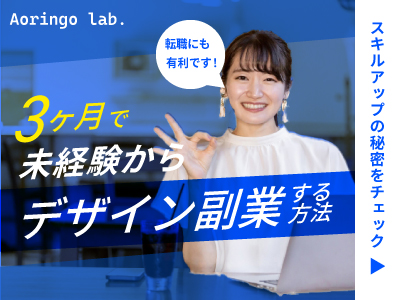
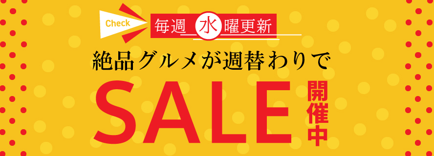
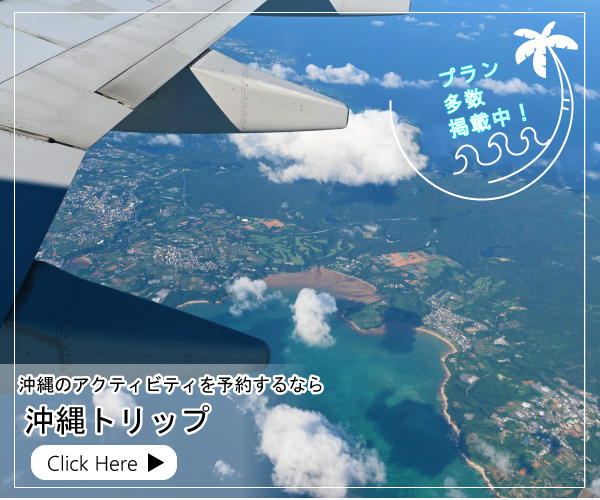

模写バナーその1:未経験向けデザイン副業の紹介

参考サイトURL:【リベ大】スキルアップチャンネル バナーデザイン講座 第4回バナーデザイン実践編
作成日：2023年7月
制作時間：3時間
使用ツール：Photoshop/illustrator
素材の入手：写真AC
バナーの目的：デザインで副業、転職、フリーランスとして独立したい人向けの広告バナー
ターゲット層：20代後半～40代の、若手～中堅層の男女、デザインに興味はあるが未経験の方や初心者の方
希望のイメージ：シンプルだけど一目で目に付く、自分でもできそう！と思ってもらえるイメージ
サイズ：横幅400px × 縦幅300px jpeg
その他：3か月でファーストキャッシュを得られることを訴求したい。
模写バナーその2:セールの広告

参考サイトURL:バナー広場
作成日：2023年7月
制作時間：1時間半
使用ツール：illustrator
バナーの目的：セールに関する情報の連絡
ターゲット層：一般消費者向け
希望のイメージ：暖色、ポップ、ベタ塗りで、「食品」をイメージしやすくした。
サイズ：横幅888px × 縦幅320px jpeg
模写バナーその3:沖縄旅行のプランニング

参考サイトURL:バナー広場
作成日：2023年7月
制作時間：3時間
使用ツール：Photoshop/illustrator
素材の入手：バナー右上ロゴ 自力で作成（illustrator）、写真 自身が沖縄旅行した際に撮影した写真を利用
バナーの目的：沖縄旅行のプランニングや予約に関してのサービスサイトへ誘導したい。
ターゲット層：一般消費者
希望のイメージ：飛行機の予約もできることをアピールするため、飛行機の中から沖縄を撮影した写真を使用。自然、風景を使用。
サイズ：横幅600px × 縦幅500px jpeg
その他：多くのプランを提案できることを訴求したい